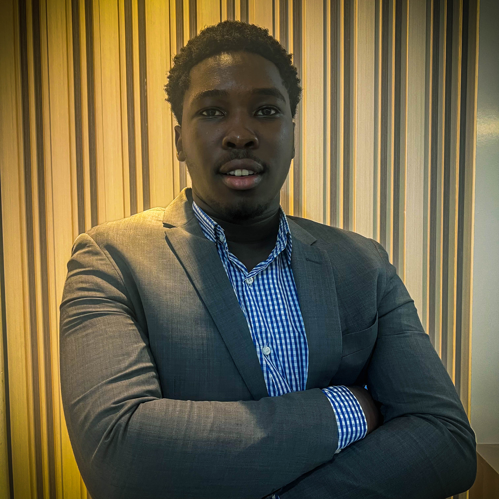

Adebayo Oluwadamilola

Summary
Dynamic and results-oriented Computer Engineering student with a strong academic foundation and a passion for technology innovation. Possesses a solid grasp of computer hardware and software systems, coupled with a deep commitment to staying abreast of industry trends
Education
- Bachelor of Engineering, Computer Engineering - Nile University of Nigeria (2020-2025)
Work Experience
- Information Technology Support Staff - Olalekan Adebayo & Co. (Chartered Accountants)
June 2021 - September 2021
Technologies Used: Java, Microsoft Excel, MySQL, MS Office
Skills
- Languages: Python, Javascript, HTML/css,JavaScript, SQL
- Frameworks: React.js/React Native,Node.js
- Services: MongoDB, AWS, Azure Data Lake, Firebase.
Certifications
- AWS Cloud Technical Essentials-----July 2024
Leadership and Accomplishments
- Social Prefect at Graceland International School (2019/2020)
- Second Place in Nigerian Computer Society IT Whizkid Competition (2017/2018)
- Third Place in the candaian computing Competition(2018/2019)